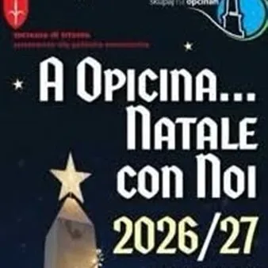

da lun 30 nov a lun 11 gen
A Opicina... Natale con Noi 2026/2027
Anche quest’anno a Opicina si festeggia il “Natale con Noi”. Il programma prevede anche nel 2026, oltre alla consueta apertura straordinaria dei negozi, l’allestimento di ben tre presepi: a Villa Carsia, in Via di Prosecco e – da due anni a questa parte – anche all’Obelisco. E…
 Indicazioni
Indicazioni
- Costi e prenotazioni
- Costo non indicato · Prenotazione non indicata
- Programma
- Programma da verificare. Apri la fonte ufficiale per orari e possibili aggiornamenti.
- In caso di maltempo
- Nessuna indicazione specifica pubblicata.
- Note
- Acquisito automaticamente dalla fonte.
L’EVENTO
Descrizione completa
Anche quest’anno a Opicina si festeggia il “Natale con Noi”. Il programma prevede anche nel 2026, oltre alla consueta apertura straordinaria dei negozi, l’allestimento di ben tre presepi: a Villa Carsia, in Via di Prosecco e – da due anni a questa parte – anche all’Obelisco. E poi San Nicolò e Babbo Natale in carrozza, mercatino natalizio e di San Nicolò, feste e saggi di Natale, torneo di briscola intrattenimento per i più piccoli e visite ai Bunker di Opicina.
La manifestazione ravviverà la borgata carsica con le luci e i colori del Natale dal 30 novembre 2026 fino all’11 gennaio 2027.
Gli appuntamenti in calendario in questa edizione:
Lunedì 30 novembre ore 17.00 presso la sede del Circolo SKD Tabor Aps di via Nazionale 51
Accensione delle luminarie natalizie
Giovedì 3 dicembre ore 16.00 presso la Casa di Riposo Antonella Residenza Insieme a Noi
Festa di San Nicolò
Dal 4 al 7 dicembre presso la sede del Circolo SKD Tabor Aps di via Nazionale 51
Sarà allestito il tradizionale Mercatino di San Nicolò con la Mostra/mercatino dell'artigianato locale a cura del Gruppo "Con il filo in mano" con i seguenti orari:
venerdì 4 dicembre dalle 15.30 alle 19.00
sabato 5 dicembre dalle 9.30 alle 12.30 e dalle 15.30 alle 19.00
domenica 6 dicembre dalle 9.30 alle 12.30
lunedì 7 dicembre dalle 9.30 alle 12.30 e dalle 15.30 alle 19.00
Sabato 5 dicembre ore 10.00 e ore 17.00
Visite ai Bunker di Opicina a cura del GAAST con ritrovo presso il parcheggio del quadrivio di Opicina.
Prenotazione obbligatoria inviando un'e-mail a gaasts1@gmail.com specificando i nominativi dei partecipanti e indicando un recapito telefonico
Ore 16.00 da Piazzale Monte Re con passaggio al Ricreatorio "F.lli Fonda Savio"
San Nicolò tornerà ad accompagnare i bambini a spasso per il centro a bordo della carrozza a cavalli e offrirà a tutti i piccoli presenti dei dolcetti.
Ore 17.00 in Piazzale Monte Re
Accensione delle luci dell’Abete natalizio - donato dal Comune di Trieste e decorato anche in questo 2026 dai gingilli realizzati degli allievi del Ricreatorio comunale "F.lli Fonda Savio" di Opicina. Con la partecipazione di San Nicolò impersonato da Omar Marucelli con l'allietamento del Coro giovanile della Scuola primaria Osnovna šola "France Bevk"
Ore 17.30 via di Prosecco 7
Inaugurazione ed accensione delle luci del presepe, realizzato da Nonna Bruna e Dario Rota, e la benedizione del parroco della chiesa di San Bartolomeo, Franc Šenk alla presenza delle Autorità cittadine con l'allietamento del Coro "Chi canta prega due volte" e del "Coro maschile Stane Malič"
Lunedì 7 dicembre ore 10.00
Martedì 8 dicembre ore 17.00 Obelisco
Inaugurazione ed accensione delle luci del presepe all'Obelisco con le figure realizzate dal Liceo umanistico e socio economico "Anton Martin Slomšek" e Gesù Bambino realizzato dall'Istituto per geometri "Max Fabiani", la benedizione del parroco della chiesa di San Bartolomeo, Franc Šenk e Canti natalizi a cura del Gruppo musicale "Blooby e i Cherubini"
Giovedì 10 dicembre ore 10.00 e alle 17.00
Sabato 12 dicembre ore 20.30 presso il Palazzetto Pikelc, via di Monrupino
Società sportiva POLET presenta "The Oscars - A Night of Polet". Saggio di pattinaggio
Domenica 13 dicembre ore 18.00 presso il Palazzetto Pikelc, via di Monrupino
Lunedì 14 dicembre ore 17.00 Via Sant'Isidoro
Inaugurazione ed accensione delle luci del presepe La Natività di Villa Carsia, allestita e realizzata da Nonna Bruna e Dario Rota e la partecipazione del Coro d'Argento e dell'Associazione Volop. Al termine, il vicino Supermercato Bosco offrirà un rinfresco a tutti gli intervenuti
Mercoledì 16 dicembre ore 19.00 presso il Palazzetto Pikelc, via di Monrupino
Ašd Cheerdance Millennium proporrà il Saggio di Natale 2026
Giovedì 17 dicembre ore 15.30 presso la sala della Banca ZKB di via del Ricreatorio 2
Festa di Natale per i diversamente giovani dell’Altipiano promossa dall’Associazione Volop - Volontariato Opicina - Voluntariat Opčine. Seguirà un brindisi accompagnato da dei dolcetti
Sabato 19 dicembre ore 20.00 presso la Polisportiva Opicina di Via degli Alpini, 128
Spettacolo di Pattinaggio "MammaMia, We Will Rock You"
Domenica 20 dicembre ore 18.00 presso la Polisportiva Opicina di Via degli Alpini, 128
Martedì 22 dicembre ore 16.00 in Piazzale Monte Re
Arriverà Babbo Natale in carrozza che offrirà dei dolcetti ai bambini e li accompagnerà in giro per Opicina. Cavalli e carrozza sono dell'azienda agricola Šuc
Mercoledì 23 dicembre ore 16.00 nella Casa di Riposo Antonella Residenza Insieme a Noi
Celebrazione di una Messa di Natale per gli ospiti della struttura. Seguirà un intrattenimento con parenti e amici
Giovedì 24 dicembre ore 22.00 nella chiesa di San Bartolomeo Apostolo
Santa Messa di Natale con la partecipazione del Coro "Chi canta prega due volte" e, a seguire, avrà luogo la simbolica deposizione del Bambin Gesù presso il presepe di Nonna Bruna e Dario Rota in via di Prosecco, 7 con l’allietamento del Coro maschile "Stane Malič" e del Coro "Chi canta prega due volte".
Venerdì 25 dicembre ore 10.00 nella chiesa di San Bartolomeo Apostolo
Santa Messa solenne bilingue, con la partecipazione del Coro "Chi canta prega due volte" e del Coro maschile "Stane Malič"
Sabato 26 dicembre dalle 8.00 alle 20.00 lungo i marciapiedi di via Nazionale, Strada per Vienna e via di Prosecco
Mercatino dell’artigianato, dell’hobby e dell’usato a tema natalizio in collaborazione con l’Associazione Culturale “Cose di Vecchie Case”. Nell’occasione sarà presente anche l’Isola dei bambini, con scambi di giocattoli figurine, libri, cd, dvd, fumetti e videogiochi
Giovedì 31 dicembre ore 19.00 nella chiesa di San Bartolomeo Apostolo
Santa Messa di ringraziamento
Lunedì 11 gennaio 2027 alle ore 16.00 presso Casa Capon
Incontro conviviale con Torneo di briscola
Spegnimento delle luci natalizie che segnerà la conclusione delle Festività.
L’Atelier del pittore Fulvio Cazzador di Via Nazionale, 32 sarà aperto per tutto il periodo natalizio per chi desiderasse donare un quadro.
IL PROGRAMMA
Programma e orari
Appuntamenti raccolti dalle fonti elencate. Dove manca un orario, non è ancora disponibile in questa scheda.
Programma pubblicato
- Ore 16.00 da Piazzale Monte Re con passaggio al Ricreatorio "F.lli Fonda Savio"
- Ore 17.00 in Piazzale Monte Re
- Ore 17.30 via di Prosecco 7
INFORMAZIONI UTILI
Prima di partire
- Controllare la fonte prima di partire.
ORGANIZZAZIONE